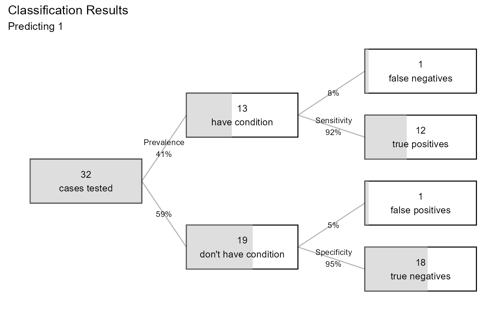

performance.glm.RdModel Performance for Logistic Regression
# S3 method for glm performance(x, data, digits = 4, p = 0.5, plot = TRUE)
| x | an object of class |
|---|---|
| data | a data frame. If no dataset is provided, the model training data is used. |
| digits | integer; number of digits to print (default=4). |
| p | numeric; probability cutoff for classifying cases (default = 0.5) |
| plot | logical; If |
The results of the methods performance.glm
Produce indices of model performance for logistic regression
# performance on training sample fit <- glm(am ~ hp + wt, family=binomial, data = mtcars) performance(fit)#> LOGISTIC REGRESSION PERFORMANCE #> Data : mtcars #> N : 32 #> Response variable : am #> Category Balance : 0 (0.59%) 1 (0.41%) #> Predicted category: 1 #> Prob to classify : >=0.5 #> #> Model: glm(am ~ hp + wt, #> family = binomial, data = mtcars) #> #> Confusion Matrix #> #> Actual #> Predicted 0 1 #> 0 18 1 #> 1 1 12 #> #> Overall Statistics #> #> Accuracy: 0.9375 #> 97% CI : (0.7919, 0.9923) #> No Information Rate: 0.5938 #> P-Value [Acc > NIR]: 1.452e-05 #> #> Statistics by Category #> #> Sensitivity 0.9231 #> Specificity 0.9474 #> Pos Pred Value 0.9231 #> Neg Pred Value 0.9474 #> F1 0.9231 #> --- #> Note: recall = sensitivity, #> precision = pos pred value.